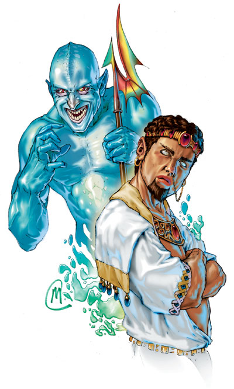

|
巨灵

土巨灵
大型异界生物（土，邪恶）
生命骰：8d8+16（52 HP）
先攻值：+0
速度：20 英尺
防御等级：17（-1 体型，+8 天生）
攻击：挥击 +13/+8 近战
伤害：挥击 1d8+9
面宽/触及：5英尺乘5英尺/10英尺
特殊攻击：类法术能力，大地熟悉，推进
特性：位面传送，心灵感应
豁免：强韧 +8，反射 +6，意志 +8
属性：力量 22，敏捷 11，体质 14，智力 11，感知 15，魅力 15
技能：估价 +11，手艺（任意） +11，察言观色 +13，辨识法术 +9，侦察 +13
专长：顺势斩，猛力攻击，精通击破武器
气候/地形：任意陆地及地底
组织：单独，成群（2-4）或结队（6-15）
挑战等级：7
宝物：标凖钱币；双倍宝物；标凖物品
阵营：总是中立邪恶
进化：9-12 HD（大型）；13-24 HD（超大型）
GENIE
Dao
Large Outsider(Earth,Evil)
Hit Dice:8d8+16(52 hp)
Initiative:+0
Speed:20 ft.
AC:17(-1 size,+8 natural)
Attacks:Slam +13/+8 melee
Damage:Slam 1d8+9
Face/Reach:5 ft.by 5 ft./10 ft.
Special Attacks:Spell-like abilities,earth mastery,push
Special Qualities:Plane shift,telepathy
Saves:Fort +8,Ref +6,Will +8
Abilities:Str 22,Dex 11,Con 14,Int 11,Wis 15,cha 15
Skills:Appraise +11,Craft(any) +11,Sense Motive +13,Spellcraft +9,Spot +13
Feats:Cleave,Power Attack,Sunder
Climate/Terrain:Any land and underground
Organization:Solitary,company(2-4) or band(6-15)
Challenge Rating:7
Treasure:Standard coins;double goods;standard items
Alignment:Always neutral evil
Advancement:9-12 HD(Large);13-24 HD(Huge)
水巨灵
大型异界生物（混乱，水）
生命骰：11d8+22（71 HP）
先攻值：+3（敏捷）
速度：20 英尺，游泳 60 英尺
防御等级：19（-1 体型，+3 敏捷，+7 天生）
攻击：挥击 +16/+11 近战
伤害：挥击 1d8+9
面宽/触及：5英尺乘5英尺/10英尺
特殊攻击：类法术能力，水域熟悉，浸湿，旋涡
特性：法术抗力 27，位面传送，心灵感应
豁免：强韧 +9，反射 +10，意志 +9
属性：力量 22，敏捷 16，体质 14，智力 16，感知 15，魅力 15
技能：手艺（任意两种） +17，脱逃 +12，威吓 +16，聆听 +16，潜行 +17，察言观色 +16，侦察 +16，辨识法术 +17
专长：顺势斩，猛力攻击
气候/地形：任意陆地及地底
组织：单独，成群（2-4）或结队（6-15）
挑战等级：9
宝物：双倍于标凖
阵营：总是混乱中立
进化：12-15 HD（大型）；16-33 HD（超大型）
Marid
Large Outsider(Chaotic,Water)
Hit Dice:11d8+22(71 hp)
Initiative:+3(Dex)
Speed:20 ft.,swim 60 ft.
AC:19(-1 size,+3 Dex,+7 natural)
Attacks:Slam +16/+11 melee
Damage:Slam 1d8+9
Face/Reach:5 ft.by 5 ft./10 ft.
Special Attacks:Spell-like abilities,water mastery,drench,vortex
Special Qualities:SR 27,plane shift,telepathy
Saves:Fort +9,Ref +10,Will +9
Abilities:Str 22,Dex 16,Con 14,Int 16,Wis 15,cha 15
Skills:Craft(any) +17,Escape Artist +12,Intimidate +16,Listen +16,Move Silently +17,Sense Motive +16,Spot +16,Spellcraft +17
Feats:Cleave,Great Cleave,Power Attack
Climate/Terrain:Any land and underground
Organization:Solitary ,company(2-4) or band(6-15)
Challenge Rating:9
Treasure:Double standard
Alignment:Always chaotic neutral
Advancement:12-15 HD(Large);16-33 HD(Huge)
所有的巨灵都居住在元素位面，他们多数与领近的主位面有着密切的来往。一些巨灵住在贮有财宝的洞穴中，但往往会招来各种麻烦和危险。
出于自然的天性，巨灵的外形通常会如同人类一般，只是有些许不同而已。比如说土巨灵，他们矮胖且强壮；而水巨灵的皮肤则往往是蓝色的。所有的巨灵都是幻术系的大师，所以他们很少以真面目示人。
巨灵的言谈举止都与他们生存的位面息息相关。土巨灵渴望交易宝石与金币，而水巨灵则象变幻无常的大海般不断的改变自己的脾气。所有的巨灵都有着好奇的天性，他们常会离开自己那雄伟的元素宫殿去猎奇或去主位面与人交战。
战斗
介于他们那多样的类法术能力，巨灵们有着各种战斗方法。他们倾向于在战斗中积极的思考，尝试使用不同的技巧以及发现敌人的弱点。
位面传送（Sp）：巨灵可以进入星界位面，主位面或是任何一个元素位面。这个能力除了会对巨灵本身生效外，还可以外带六个与巨灵手牵手的生物。除此之外，此能力与等于同名法术。
心灵感应（Su）：巨灵能够通过心灵感应与周围100英尺范围内任何一种会使用语言的生物进行沟通。
Of all the creatures that inhabit the Elemental Planes,genies interact the most closely with the Material Plane.Some genies live in bored opulence,but many are drawn to variety and danger.
In their natural form,genies are generally humanlike but betray some hint true nature.Dao,for example,are stocky and muscular,while a marid''s skin often has a bluish tint.All genies are masters of illusion magic,so their appearance can rarely be taken at face value.
Their behavior also mimics an aspect of whatever plane they call home.Dao are eager traders of gems and gold,while marids can change their moods as capriciously as a calm sea comes stormy.All genies share an inquisitive temperament,though,often leaving their vast elemental palace to get caught up in the many agendas and conflicts of the Material Plane.
COMBAT
With their wide array of spell-like abilities,genies have a number of ways they can approach a fight.They tend to consider combat as a puzzle,trying different techniques and probing for weaknesses.
Plane Shift(Sp):A genie can enter any of the Elemental Planes,the Astral Plane,or the Material Plane.This ability transports the genie and up to six other creatures,provided they all link hands with the genie.It is otherwise similar to the spell of the same name.
Telepathy(Su):A genie can communicate telepathically with any creature within 100 fett that has a language.
土巨灵
土巨灵来自土元素位面，他们常常在那里或是主位面从事采掘宝石的工作。他们喜爱藏量丰富的矿脉，但是他们也是势利的生物，当矿脉资源耗尽时，便会弃之离去。
土巨灵的外形如同一个健壮的人类，身穿流光彩逸的丝制长袍，他们的身上几乎总是装饰着各种珠宝。虽然本体是高大的人形生物，但是因为巨灵的天性使他们总是喜欢在合适的场合把自己变成一个普通的人类或是矮人。
在土元素位面，许多土巨灵都居住在被他们称为“阴暗巨穴”的地下世界，在那里他们强迫一些基本元素奴仆来挖掘宝石矿区。阴暗巨穴是由一次地震形成的，面积有一个大陆那么大，无论哪一个土巨灵都会觉这相当有趣。在土巨灵当中，总是有人在不停的竞争着大可汗的宝座。
在其它地方的土巨灵，常常在迷宫般的地下世界组成自己的团队组织，由阿塔曼（首领）或是赫尔曼（司令官）来担当领导，用他们无情的压迫来强逼其他的土巨灵和奴隶替他们挖掘矿脉。
土巨灵使用土族语，水族语和通用语。
战斗
在战斗中，土巨灵往往会组成各种适合战场地形的阵形进行作战。他们使用石墙术，穿墙术，化石为泥术来封闭（或创造）环境不令敌人脱逃，并操纵这些环境来进行有效的攻击。然后他们热衷于用充满力量的双拳检验自己在混战之中的实力。
类法术能力：随意施展——变身术，侦测善良，侦测魔法，气化形体，隐形术，误导术，穿墙术，常驻幻影，石墙术；3次/天——地动术，化石为泥；1次/天 ——给予三个有限愿望（只能给非巨灵生物）。这些能力在施展时如同于一个19级的术士的同名法术（豁免 DC=12+法术等级）。
大地熟悉（Ex）：当土巨灵和敌人都与地面发生接触时，土巨灵便会在攻击加值和战斗伤害投骰上有+1加值。如果敌人是在空中或水中，那么土巨灵便会在攻击加值和战斗伤害投骰上有-4罚值。（上述调整值没有包含在资料列之内。）
推进（Ex）：土巨灵可以展开冲撞动作而不会引发借机攻击。大地熟悉特性所提供的修正值在进行冲撞的力量检定时也同样适用。
DAO
Genies from the Elemental Plane of Earth,dao often run gem-mining operations there or on the Material Plane.They love to barter for power and wealth but are apt to discount lesser creatures as mere resources to be exploited,then thrown away.
Resembling muscular humans in flowing silk robes,dao are almost always festooned with jewelry.Their natural forms are too tall to pass for human,but like many genies,they employ alter self to appear as a normal human or dwarf when it suits them.
On the Plane of Earth,many dao live in a great underground complex called the Great Dismal Delve,where they force elemental slaves to toil in their gem mines.The Great Dismal Delve is the size of a continent and racked with frequent quakes,which dao find entertaining.The rivalries anmong those who would become the Great Khan of the dao are intense and unending.
Elsewhere,bands of dao organize themselves in vast underground mazeworks led by an ataman or hetman,who rules with a stony fist over the other dao and whatever slaves do their mining for them.
Dao speak Terran,Aquan,and Common.
Combat
In a fight,a dao rearranges the battlefield to suit it.Using wall of stone,passwall,and transmute rock to mud,it divides its foes,seals off(or creates)escape routes,and prevents them from maneuvering effectively.Then it eagerly puts its strength to the test,wading into the thick of a melee with both fists flailing.
Spell-Like Abilities:At will--alter self,detect good,detect magic,gaseous form,invisibility,misdirection,passwall,persistent image,wall of stone;3/day--move earth,transmute rock to mud;1/day--grant up to three limited wishes(to nongenies only).These abilities are as the spells cast by a 19th-level sorcerer(save DC=12+spel level).
Earth Mastery(Ex):A dao gains a +1 bonus on attack and damage rolls if both it and its foe touch the ground.If an opponent is airborne or waterborne,the dao suffers a -4 penalty on attack and damage rolls.(These modifiers are not inluded in the statistics block.)
Push(Ex):A dao can start a bull rush maneuver without provoking an attack of opportunity.The combat modifiers given in Earth Mastery,above,also apply to the dao''s opposed Strength checks.
水巨灵
水巨灵的个性有如大海一般的激烈且难以自制。无论是在处于元素界的宫殿中还是在主位面的大海里，水巨灵都非常热衷于潜入深海寻找珍珠或是其它的宝藏。生活于主位面的水巨灵还有一种娱乐：掀翻船只并将水手溺死于水中。
水巨灵看起来象是一个高16英尺，皮肤为蓝色的人类。当他们脱去所有的衣物时，将会畅通无阻的在水中游行。一些水巨灵穿着完全由海草编织而成的衣服，并装饰着珊瑚或是珍珠。
水巨灵的社会结构比起其他的巨灵来要松散得多。在水元素界，有着由一个帕拉夏支配着的松散帝国，而很多水巨灵根本不承认他们的领袖。任何时候都会有相当数目的继承者竞争珊瑚之王的宝座——他们可不希望等到帕拉夏自然地结束他的统治。
战斗
每个水巨灵都知道在水中他们是最安全的，故很少有水巨灵会在由其它元素构成的地形中作战。而在水域中，水巨灵将会是相当可怕的。他们的战术通常是用力掀翻敌人的船只，再将落水者吸入旋涡之中。
类法术能力：随意施展——造水术，侦测邪恶，侦测善良，侦测魔法，隐形术，变形自身，净化食品及饮料（仅限于水），识破隐形；5次/天——操控水位，气化形体，重雾术，水中呼吸法；1次/年——有限愿望（仅只能对非巨灵生物使用）。
水域熟悉（Ex）：当水巨灵和敌人都与水源发生接触时，水巨灵便会在攻击加值和战斗伤害投骰上有+1加值。如果敌人是在陆地上，那么水巨灵便会在攻击加值和战斗伤害投骰上有-4罚值。（上述调整值没有包含在资料列之内。）
水巨灵可能会恐吓经过他身边的船只。他可以轻松的掀翻长55英尺的船只，或令长110英尺的船只停止航行，甚至是使长220英尺的船只降到半速。
浸湿（Ex）：水巨灵的触碰可以熄灭火炬、营火、曝露在外的灯火，以及其它大型或更小的非魔法且无保护的火焰。水巨灵还可以解除他可以碰到的魔法火焰，效果如同11级术士的解除魔法法术一般。
旋涡（Su）：水巨灵只要是在水里，每隔10分钟就能将自己转达成一道旋涡，这种形态只能维持5轮时间。变成旋涡后，水巨灵能以他的游泳速度在水中或沿着水底移动。
旋涡的基部有5英尺宽，顶部最大有30英尺宽，高度为10到40英尺。水巨灵可以自已控制旋涡的高度和大小。大型或是更小的生物若被吸入旋涡，便会受到伤害。受旋涡影响的生物必须通过一次成功的反射检定（DC 19）不然就会受到2d6点伤害。然后还要再通过第二次成功的反射检定保持固定自己的身体以免被强力的水流吸入，以及每轮受到与上述相同的伤害。被卷入旋涡的生物每轮都可以做一次反射检定来尝试挣脱旋涡的影响。如果通过了该检定，便可以逃出旋涡，但仍然要受到伤害。水巨灵可以随时把困在旋涡中的生物抛出去，并丢到旋涡目前所在的位置。
如果旋涡的基部触碰到水底，将会产生一个旋转的沙砾云。这个沙砾云以水巨灵为中心，其直径相当于旋涡高度的一半。沙砾云会遮蔽所有5英尺范围外的视觉能力，包括黑暗视觉在内。距离5英尺的生物为二分之一隐蔽，距离更远的生物则是完全遮蔽（请见玩家手册133页关于遮蔽的详细说明）。在沙砾云中的施法者必须要通过一次成功的专注检定（DC 19）才可以施展法术。
MARID
Marids are fiercely independent genies as hard to control as the ocean itself.Whether in their palaces on the Elemental Plane of Water or in the seas of the Material Plane,marids love to hunt for sport through the depths and gather pearls and other treasures from the sea floor.Those on the Material Plane have another pastime:capsizing ships and drowning sailors.
Marids look like 16-foot-tall,blueskinned humans.When they deign to wear clothing at all,it''s something that won''t impede swimming.Some marids dress in finery woven entirely from seaweed,with a brocade of coral and pearls.
As a group,marids have a much looser social structure than other genies.On the Elemental Plane of Water,there is a loose empire ruled by a padishah,but many marids don''t recognize its auth hority.At any on time,there are a number of heirs vying for the Coral Throne--and many are unwilling to wait for the current padishah''s reign to end naturally.
Combat
Every marid knows that it''s much safer in the water,so it rarely fights outside its element.But within the waves,the marid is a terror.Its tactics often entail capsizing any enemy ships,then sucking swimmers into a vortex.
Spell-Like Abilities:At will--create water,detect evil,detect good,detect magic,invisibility,polymorph self,purify food and drink(water only),see invisibility;5/day--control water,gaseous form,solid fog,water breathing;1/year--limited wish(to nongenies only).
Water Mastery(Ex):A marid gains a +1 bonus on attack and dagame rolls if both it and its oppnent touch water.If the opponent or the marid is landbound,the marid suffers a -4 penalty on attack and damage rolls.(These modifiers are not included in the statistics block.)
A marid can be a serious threat to a ship that crosses its path.It can easily overturn craft less than 55 feet long and stop vessels of up to 110 feet in length.Even ships as long as 220 feet can be slowed to half speed.
Drench(Ex):The marid''s touch puts out torches,campfires,exposed lanterns,and other open flames of nomagical origin if these are of Large size or smaller.The marid can dispel magical fire it touches as dispel magic cast by an 11th-level sorcerer.
Vortex(Su):The marid can transform itself into a whirlpool once every 10 minutes,provided itis underwater,and remain in that form for up to 5 rounds.In vortex form,the marid can move through the water or along the bottom at its swim speed.
The vortex is 5 feet wide at the base,up to 30 feet wide at the top,and 10 feet to 40 feet tall.The marid sets the height of the vortex within that range.Creatures smaller than Large might take damage when caugh in the vortex and may be swept up by it.An affected creature must succeed at a Reflex save(DC 19)when it comes into contact with the vortex or take 2d6 points of damage.It must also succeed at a second Reflex save or be picked up bodily and held suspended in the powerful currents,automatically taking damage each round.A creature that can swim is allowed a Reflex save each round to escape the vortex.The creature still takes damage but can leave if the save is successful.The marid can eject any carried creatures whenever it wishes,depositing them wherever the vortex happens to be.
If the vortex''s base touches the bottom,it creates a swirling cloud of debris.This cloud is centered on the marid and has a diameter of half the vortex''s height.The cloud obscures all vision,including darkvision,beyond 5 feet.Creatures 5 feet away have one-half concealment,while those farther away have total concealment(see Concealment,page 133 of the Player''s Handbook).Those caught in the cloud must succeed at a Concentration check(DC 19)to cast a spell.
新出现的译名
Dao 土巨灵
Marid 水巨灵 |